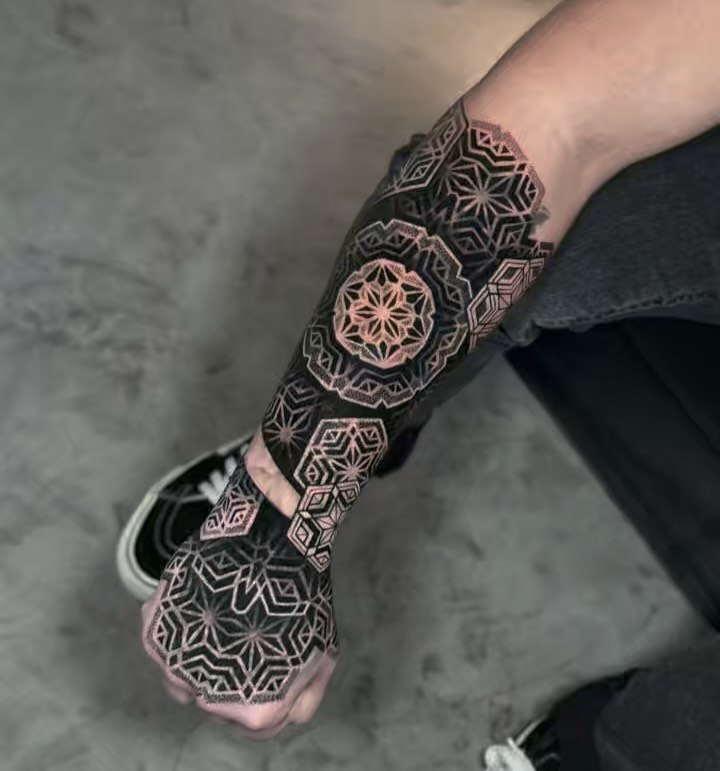
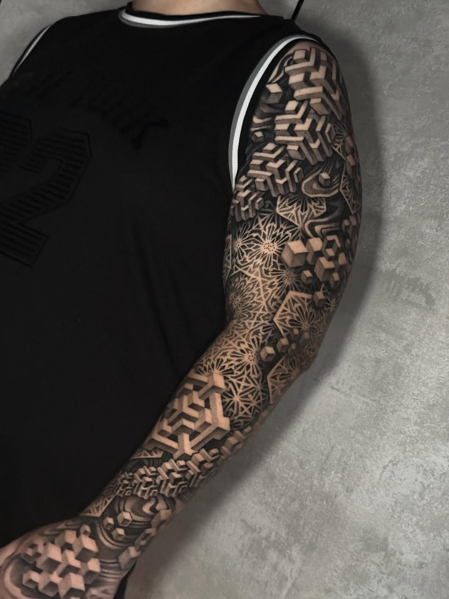

The discipline of noise — a conversation with Suezo
From a small studio in Presidente Prudente: on dot work, rhythm, the patience of a single point, and what skin asks of a line.
"A dot is a decision. A thousand dots is a discipline."
Suezo works alone, in a small studio in Presidente Prudente, four hundred miles inland from the coast. He's been tattooing for seven years; the work is quiet, dense, and built almost entirely from the smallest possible mark. We talked across an afternoon — about the patience the medium demands, the music in his headphones, and why he distrusts the word style.
Q.01How did you find your way to tattooing?
Slowly. I drew on everything that would hold ink — schoolbooks, walls, my own arms with a pen. Tattooing came late. I was twenty-three before I picked up a machine, and I'm grateful for the wait. The years of just drawing taught me what a line is before I had to put one on someone else.
Q.02Why dot work, specifically?
Because it's honest. A line can hide a mistake; you can pull it through, you can fix it on the way. A dot can't lie. It's there or it isn't. The dot was the most direct way to feel what I was actually doing.
Q.03How do you describe what you do?
I don't, if I can avoid it. People say dot work, geometric, blackwork — fine, all of those are true. But naming the thing is mostly a way to sell it. The work is just the work. I want it to be quiet, dense, and to sit on the body like it has always been there.

A dot is a decision. A thousand dots is a discipline. A million dots is, eventually, a piece — but only if every one of them was the right decision.
Q.04What does a session feel like, from inside?
Like being underwater for six hours. Sound goes away. The hand moves, the wrist moves, the dot lands. There's a rhythm and you can hear it — not the machine, the rhythm under the machine. When I lose the rhythm I stop and walk outside for ten minutes. Always.
Q.05What's in the headphones?
Sub bass. Slow tempos. Nothing with vocals — vocals make me think in language, and I don't want to be in language. The handle subnoize comes from that. The work happens below the words.
Q.06What do you avoid?
Filling space because I can. The empty parts of a piece are doing as much work as the dense parts. I see a lot of dot work where the artist forgot to leave room for the eye to rest, and the whole thing turns into texture. Texture isn't the goal. Form is the goal, and form needs negative space.
From the archive


Q.07What's the hardest part of the technique?
Consistency. A dot at 9am and a dot at 4pm have to be the same dot. They're not, naturally — your hand changes through the day, your eye changes, your shoulder gets tight. You learn to feel the drift and correct against it. I take more breaks than most artists I know. Tired hands lie. Rested hands tell the truth.
Q.08Working from a small Brazilian city — what's that like?
Quiet. Clients fly in, which I don't take for granted. The distance from the bigger scenes — São Paulo, Rio — is a gift. I'm not in a conversation with twenty other studios down the street. I'm in a conversation with the work and with my clients. That's enough.
The work happens under the words.
Suezo holds his hand flat, then taps the table four times — even, unhurried, almost musical. That, he says, is the cadence. Faster than that and the dots get sloppy. Slower and you start to think, and thinking is the wrong tool for this part of the job.
The piece is the result of staying in that cadence for hours at a time, and of trusting the cadence more than you trust yourself.
Q.09How long does a piece take?
Anywhere from three hours to thirty, across however many sessions it needs. I don't rush. The client and I decide the shape together; the time it takes is the time it takes.
Q.10What separates a piece that works from one that doesn't?
Whether you can stop looking at it. A good piece holds your eye and then, eventually, lets it go. A bad one either doesn't catch the eye in the first place or refuses to release it — both are failures of composition. The eye should travel.
Q.11Whose work do you watch?
Anyone who is honest about the medium. I don't care about the named artists; I care about the artists who are still asking what the work is, even ten years in. You can tell. The questions show up in the marks.
Q.12What's next?
More of the same. Smaller dots, longer sessions, fewer pieces a year. I'd rather make ten pieces I'm proud of than fifty I'm fine with. That's the whole plan.
Recorded Summer 2026 · Presidente Prudente

{kind=link}
{kind=link}